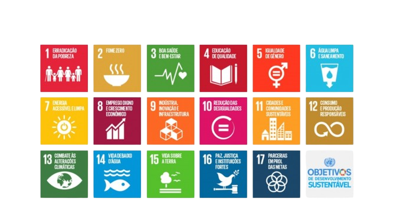

Ai ai! A vida no campo, ar fresco, o cantar do galo, colher o próprio alimento, Já na cidade, muitas vezes acabamo comendo alimentos com agrotóxicos e massivamente industrializados, no campo, porem tem tambem suas dificuldades, ter que acordar cedo para ja começar a trabalhar na lavroura não e algo facil para muitos, Porem a migração do campo para as cidades tem vários efeitos ambientais, incluindo perda de habitats naturais, aumento da demanda por recursos como água e energia, poluição atmosférica, hídrica e do solo, e contribuição para as mudanças climáticas devido ao consumo intensivo de recursos e emissões de gases de efeito estufa.
Para mitigar esses impactos, são necessários habitos sustentaveis, que podem ser construidos de forma simples e inseridos em nossas rotinas, siga com alguns habitos sustentaveis:
Faça pequenas mudanças diárias para reduzir o uso de água e energia em sua casa, como tomar banhos mais curtos, etc.
Use o transporte público, ande de bicicleta ou caminhe sempre que possível para reduzir o tráfego e as emissões de carbono.
Ao usar uma garrafa reutilizável, você evita copos descartáveis, reduzindo o lixo gerado e a poluição plástica.
Sempre que possível, digitalize documentos e opte por notas fiscais eletrônicas.
Com a urbanização trazendo desafios como o aumento do sedentarismo, a poluição do ar e o estresse, uma alimentação saudável pode mitigar esses impactos de várias maneiras, beneficiando tanto o ambiente familiar quanto o educacional, desempenhando um papel crucial na promoção da saúde, passe o cursor nos cards e confira:
Alimentos saudáveis fornecem vitaminas e minerais essenciais para o crescimento e desenvolvimento.
Saúde Física
Alimentação equilibrada pode ajudar a uma boa noite de sono que impacta no humor e reduz sintomas de ansiedade e depressão.
Saúde Mental
Uma alimentação saudável pode diminuir os gastos futuros com tratamentos médicos, tendo em vista que melhora a saúde tanto Física quanto Mental
Sustentabilidade
Cozinhar e comer em família fortalece os laços e permite que os pais ensinem bons hábitos alimentares, Crianças aprendem pelo exemplo.
Laços Familiares
refere-se ao processo de ensinar indivíduos, especialmente crianças, sobre a importância de uma alimentação saudável e equilibrada.
Educação Alimentar
Alimentos como frutas, vegetais e grãos integrais ricos em nutrientes fornecem a energia necessária para manter o foco durante as aulas.
Concentração:
Nutrientes como ômega-3, encontrados em sementes e peixes, ajudam na função cerebral e podem melhorar a capacidade de aprendizado e memória.
Memória
Uma dieta saudável evita picos e quedas de energia, o que pode levar a uma maior disposição e menos fadiga para atividades escolares.
Disposição
Devido à sua maior alerta e capacidade de processar informações, crianças que se alimentam bem tendem a ter melhores notas e desempenho escolar.
Desempenho Acadêmico
Uma dieta saudável pode regular o humor e reduzir comportamentos indesejados, como irritabilidade e hiperatividade.
Comportamento
A Secretaria de Estado da Educação (Seed) está transformando o ensino-aprendizagem de alunos atendidos em
casa por motivos de saúde através do programa Alimentação Escolar Domiciliar (AED). O AED fornece merenda em
casa para cerca de 800 estudantes da rede estadual, garantindo a mesma qualidade da alimentação oferecida
nas escolas. O programa é gerido pelo Instituto Paranaense de Desenvolvimento Educacional (Fundepar),
vinculado à Seed.
Para
mais informações clique aqui!
Você sabe oque e uma horta urbana? elas ajudam a uma alimentação saúdavel na comunidade, pois são espaços localizados em cidades que são destinados ao plantio e cultivo de legumes, frutas e plantas ervas dentre outros, geralmente destinado ao consumo, você conhece alguma perta de sua casa ou cidade? sabia que curitiba completou recentemente a marca e ter 170 hortas urbanas em sua cidade?
As hortas urbanas podem agregar em mais saude e qualidade na alimentação de um determinado local, uma vez que visam a produção com mais qualdiade menos agrotóxicos e concervantes, elas ajudam tambem na qualidade do ar, podendo trazer mais saude dependendo da região, essas hortas podem tambem sensibilizar para que outras pessoas tambem aderem a praticas mais sustententavéis. Podem tambem colaborar com a diminuiçãoda degradação do solo que muitas vezes e agredido por conta da urbanização.
Uma oportunidade para cultivar alimentos frescos em espaços limitados, como terraços ou varandas ensolaradas, é construir uma horta urbana. Escolha plantas adequadas para o seu espaço e luz solar, prepare o solo ou escolha substratos adequados e faça manutenção regular para garantir que as plantas cresçam bem e prosperem. Desfrute de alimentos frescos com frequência e contribua para um estilo de vida nas cidades mais sustentável e conectado à natureza.
Manter um equilíbrio adequado de água, nutrientes e proteção contra pragas é essencial para cuidar de uma horta urbana de forma eficaz. Regue suas plantas com frequência, verificando a umidade do solo e evitando tanto o excesso quanto a escassez de água. Utilize adubos orgânicos para fornecer nutrientes e monitorar a saúde das plantas para detectar e tratar doenças e pragas rapidamente. Para promover um crescimento saudável, mantenha as plantas podadas e remova as folhas danificadas. Sua horta urbana prosperará com esses cuidados básicos, fornecendo alimentos frescos e contribuindo para uma cidade mais verde e sustentável.
A área mais recentemente incorporada ao programa Cultivar Energia fica em Siqueira Campos no Paraná, e foi
preparada em parceria com a prefeitura do município para que um grupo de 15 famílias possa iniciar o plantio,
no Bairro Vila Nova. São dois terrenos com 2 mil metros quadrados ao todo. representando um passo
significativo para a promoção da agricultura urbana e a segurança alimentar na região.
Fontes: (
Jornal JCN
)
A agricultura familiar é responsável por 77% dos estabelecimentos agrícolas do Brasil, segundo último Censo Agropecuário, realizado pelo Instituto Brasileiro de Geografia e Estatística (IBGE). A prática emprega 10 milhões de pessoas, o que corresponde a 67% da força de trabalho ocupada em atividades agropecuárias.
Um dado comprovado: 84% do lixo doméstico é reciclável. A temperatura média do planeta Terra deve sofrer um aumento de 2 a 4,5 ºC até o final deste século e se isso acontecer 40% das árvores da Amazônia podem desaparecer. A cada ano um automóvel produz em média quase quatro vezes o seu peso em dióxido de carbono.
O setor agropecuário desempenha um papel importante na economia brasileira, compondo cerca de 25% do PIB nacional em 2021, ou 1,6 trilhão de dólares. No Paraná, representa 33% do produto interno bruto (PIB), enquanto no Mato Grosso representa mais de 50%. Esses dados mostram como o agronegócio é importante em várias regiões do Brasil.
A agricultura orgânica previne a contaminação causada pelo uso intensivo de produtos químicos na produção de alimentos, que afeta o ar, o solo, a água, os animais e as pessoas.
Os Objetivos de Desenvolvimento Sustentável são um apelo global à ação para acabar com a pobreza, proteger o meio ambiente e o clima e garantir que as pessoas, em todos os lugares, possam desfrutar de paz e de prosperidade. Estes são os objetivos para os quais as Nações Unidas estão contribuindo a fim de que possamos atingir a Agenda 2030 no Brasil.
